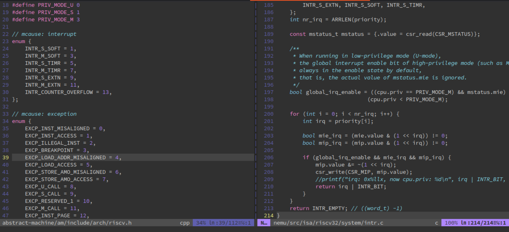
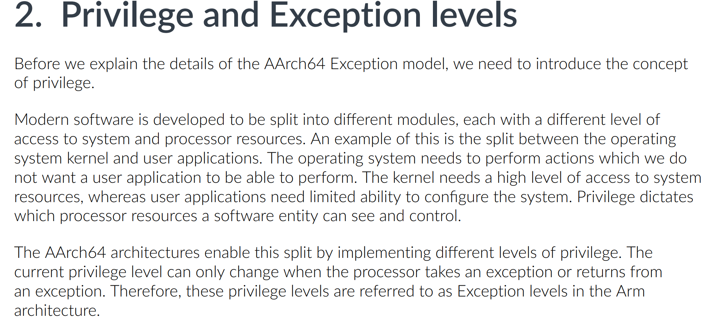
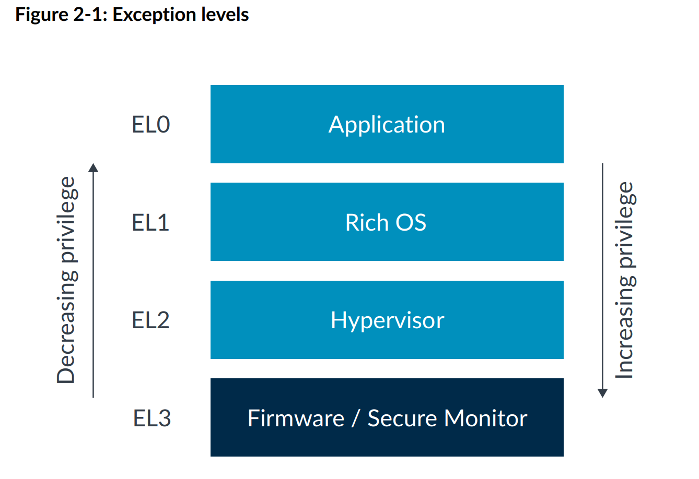
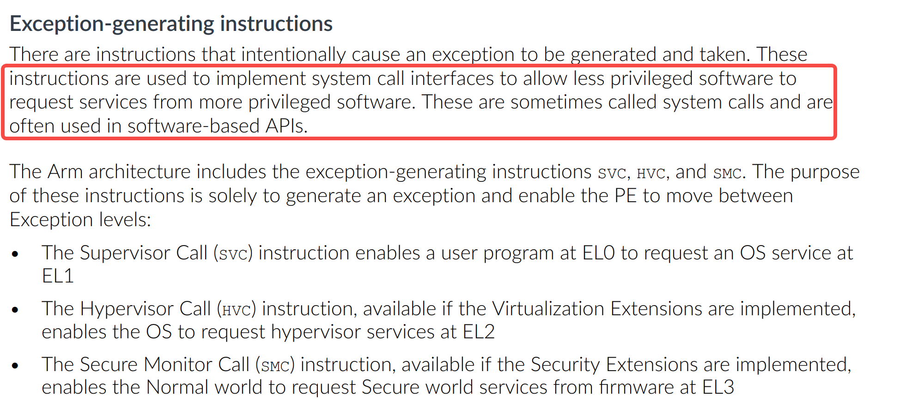

1. introduction
注意：以下的内容均为个人观点。
如果你看完后有不同的观点也没关系！请指出，我很乐意去学尝试积极的东西。
最近在看系统调用的内容，因为很久之前做过 NJU PA，写过RISC-V 版 NEMU （模拟器），所以对系统调用、privilege 等内容都是看 RISC-V 的官方文档的比较多（M/S/U、时钟中断、软件中断、外部中断...）：

而之后工作大部分时候应该都是接触 arm64 的内容，所以这里简单看看手册+让 AI 帮我读一下手册，记录一些比较有意思的内容。
这里的关注对象是 aarch64 exception model，其他版本暂时不看。
2. Privilege and Exception levels
2.1 basis

现代软件被开发成不同的模块，每个模块对系统和处理器资源的访问权限各不相同。
AArch64架构通过实现不同级别的特权来实现这种划分。当前的特权级别仅在处理器发生异常或从异常返回时才能更改。因此，在Arm架构中，这些特权级别被称为异常级别。
实话说，自己平时看到的资料和认知中都是说：每种 ISA 有自己的特权级划分。
比如：EL0/1/2/3、U/S/M 等等，以前一直理解这就是几个标志位，而硬件能够自动切换这几个标志位，这也就是特权级切换了，而这都是硬件自己做的，在进入异常处理函数之前都不会改变程序的执行流。
但 doc 直接指出这些特权级别就是异常级别。

所以，在 AArch64 中，改变当前特权级的唯一合法途径就是“发生异常”或“从异常返回”，所以应该强调的是我没法手动切换 EL，必须通过异常机制。看些例子：
- 不能在正常执行流中通过 MOV / ADD 等指令修改 PSTATE 里的 EL 字段。
- 要从 EL0 进入 EL1，只能触发同步异常（如
SVC）或等待异步异常（如 IRQ）被路由到更高 EL。- 要从 EL1 回到 EL0，只能执行
ERET（异常返回指令）。- 这跟 x86 的
CPL通过syscall/iret改变类似，但 Arm 把“特权级”和“异常处理”彻底绑定成同一个概念。
2.2 内核响应 svc #0 的流程
在比较久之前，我一听到异常，我想到的都是：缺页、除零、非法指令，但在 arm 里还有这几种异常产生指令（都是同步异常）：

它们的目的就是主动从低 EL 跳到高 EL。所以“异常级别”这个名字其实在提醒我：你想去更高特权级，就要通过异常指令。
所以我们常见到的
svc指令，应该理解为是一个“请求服务”的机制，而不是系统调用的专属指令，只是说 Linux 做了一个架构设计决定：在 Linux 中，svc #0被专用为“进入内核执行系统调用“[2]。真正的系统调用号（例如__NR_read、__NR_write）通过 通用寄存器x8传递，参数通过x0~x6传递。
那看看 Linux 内核怎么响应 svc #0 的？AI 给了一个 svc #0 到系统调用函数处理的流程，挺常见的了。。。
下面以 用户态执行
SVC #0为起点，追踪 Linux 内核 AArch64（使用SP_EL0） 的完整处理路径。基于
/arch/arm64/kernel下的：entry.S、entry-common.c、syscall.c分析。
2.2.1 硬件层：异常向量表 (entry.S)
当 CPU 在 EL0 执行 SVC #0 时，触发 同步异常 (ESR_ELx.EC = 0x15)。
硬件根据当前 EL 和异常类型，跳转到 VBAR_EL1 指向的向量表中的对应条目。
// arch/arm64/kernel/entry.S
SYM_CODE_START(vectors)
kernel_ventry 1, t, 64, sync // EL1t (不用)
...
kernel_ventry 0, t, 64, sync // ← EL0 64-bit 同步异常入口
...
kernel_ventry 宏做三件事：
- 保存异常上下文（分配
pt_regs空间） - 检查内核栈溢出（
CONFIG_VMAP_STACK） - 最后跳转到
el0t_64_sync标签（由entry_handler宏生成）
这里看代码可能会对这里面的宏展开的语法不熟悉，问问 AI 就好了。
这里的
ht参数可能会有点迷惑，在之后的章节会写。
// entry.S 底部
entry_handler 0, t, 64, sync
entry_handler 展开为：
.macro entry_handler el:req, ht:req, regsize:req, label:req
SYM_CODE_START_LOCAL(el\el\ht\()_\regsize\()_\label)
kernel_entry \el, \regsize
mov x0, sp
bl el\el\ht\()_\regsize\()_\label\()_handler
.if \el == 0
b ret_to_user
.else
b ret_to_kernel
.endif
SYM_CODE_END(el\el\ht\()_\regsize\()_\label)
# 展开：
SYM_CODE_START_LOCAL(el0t_64_sync)
kernel_entry 0, 64 // 保存所有寄存器到 pt_regs
mov x0, sp // pt_regs 指针作为第一个参数
bl el0t_64_sync_handler // 调用 C 处理函数（entry-common.c）
b ret_to_user // 异常返回路径
...
SYM_CODE_END(el0t_64_sync)
kernel_entry 完成：
- 保存 x0~x29, lr, sp, pc, pstate 到栈上 pt_regs 结构
- 设置 tsk (current task)
- 处理 MTE, PAC, SSBD 等特性
2.2.2 C 入口：el0t_64_sync_handler (entry-common.c)
// arch/arm64/kernel/entry-common.c
asmlinkage void noinstr el0t_64_sync_handler(struct pt_regs *regs)
{
unsigned long esr = read_sysreg(esr_el1);
switch (ESR_ELx_EC(esr)) {
case ESR_ELx_EC_SVC64: // 0x15
el0_svc(regs);
break;
case ESR_ELx_EC_DABT_LOW: // 数据中止
el0_da(regs, esr);
break;
...
}
}
ESR_ELx_EC(esr) 提取异常类型，SVC64 表示 64 位 SVC 指令。
2.2.3 系统调用分发 (entry-common.c → syscall.c)
// entry-common.c
static void noinstr el0_svc(struct pt_regs *regs)
{
enter_from_user_mode(regs); // 退出用户态上下文跟踪
cortex_a76_erratum_1463225_svc_handler(); // 硬件漏洞补丁
fpsimd_syscall_enter(); // 处理 FP/SVE 状态
local_daif_restore(DAIF_PROCCTX); // 开 IRQ
do_el0_svc(regs); // ← 核心
exit_to_user_mode(regs);
fpsimd_syscall_exit();
}
do_el0_svc 定义在 syscall.c：
// arch/arm64/kernel/syscall.c
void do_el0_svc(struct pt_regs *regs)
{
el0_svc_common(regs, regs->regs[8], __NR_syscalls, sys_call_table);
}
regs->regs[8]就是用户态传递的 系统调用号 (x8)__NR_syscalls是最大系统调用数sys_call_table是系统调用表（函数指针数组）
2.2.4 通用处理逻辑 el0_svc_common (syscall.c)
static void el0_svc_common(struct pt_regs *regs, int scno, int sc_nr,
const syscall_fn_t syscall_table[])
{
unsigned long flags = read_thread_flags();
regs->orig_x0 = regs->regs[0]; // 保存原始 x0（可能被系统调用返回值覆盖）
regs->syscallno = scno;
// 如果有 MTE 异步错误，先返回错误码
if (flags & _TIF_MTE_ASYNC_FAULT) {
syscall_set_return_value(current, regs, -ERESTARTNOINTR, 0);
return;
}
// 处理 ptrace / 跟踪 / 审计等 _TIF_SYSCALL_WORK 标志
if (has_syscall_work(flags)) {
if (scno == NO_SYSCALL)
syscall_set_return_value(current, regs, -ENOSYS, 0);
scno = syscall_trace_enter(regs);
if (scno == NO_SYSCALL)
goto trace_exit;
}
// 真正调用系统调用
invoke_syscall(regs, scno, sc_nr, syscall_table);
// 如果不需要退出跟踪则直接返回
if (!has_syscall_work(flags) && !IS_ENABLED(CONFIG_DEBUG_RSEQ))
return;
trace_exit:
syscall_trace_exit(regs);
}
invoke_syscall 负责查表和调用：
static void invoke_syscall(struct pt_regs *regs, unsigned int scno,
unsigned int sc_nr,
const syscall_fn_t syscall_table[])
{
add_random_kstack_offset(); // 随机偏移栈（安全）
if (scno < sc_nr) {
syscall_fn_t syscall_fn = syscall_table[array_index_nospec(scno, sc_nr)];
ret = __invoke_syscall(regs, syscall_fn);
} else {
ret = do_ni_syscall(regs, scno); // 未实现系统调用
}
syscall_set_return_value(current, regs, 0, ret);
choose_random_kstack_offset(get_random_u16());
}
__invoke_syscall 最终执行具体的内核函数（如 sys_read, sys_write）：
static long __invoke_syscall(struct pt_regs *regs, syscall_fn_t syscall_fn)
{
return syscall_fn(regs);
}
系统调用函数的原型通常是 long sys_xxx(const struct pt_regs *regs)，它会从 regs 中取出参数（x0, x1, ...）。
2.2.5 异常返回 (entry.S)
系统调用执行完后，el0_svc_common 返回到 el0_svc，然后 exit_to_user_mode，最后 el0_svc 返回到 entry.S 中的 ret_to_user 标签。
// entry.S
SYM_CODE_START_LOCAL(ret_to_user)
ldr x19, [tsk, #TSK_TI_FLAGS] // 再次检查挂起的工作
enable_step_tsk x19, x2
#ifdef CONFIG_GCC_PLUGIN_STACKLEAK
bl stackleak_erase_on_task_stack
#endif
kernel_exit 0 // 恢复寄存器并执行 ERET
kernel_exit 宏：
- 恢复
sp_el0(用户栈) - 恢复
elr_el1和spsr_el1 - 从栈中弹出 x0~x29, lr
- 执行
eret指令回到用户态SVC下一条指令
2.2.6 完整调用链（从上到下）
用户态: SVC #0
│
▼ 硬件跳转
vectors (entry.S) → kernel_ventry 0, t, 64, sync
│
▼ entry_handler 宏
el0t_64_sync (entry.S)
│ kernel_entry
│ bl el0t_64_sync_handler
▼
el0t_64_sync_handler (entry-common.c)
│ ESR_ELx_EC == SVC64 → el0_svc()
▼
el0_svc (entry-common.c)
│ do_el0_svc()
▼
do_el0_svc (syscall.c)
│ el0_svc_common(regs, regs->regs[8], ...)
▼
el0_svc_common (syscall.c)
│ invoke_syscall()
▼
invoke_syscall (syscall.c)
│ syscall_table[scno](regs)
▼
具体内核函数 (如 sys_read, fs/open.c 等)
│ 执行完成，返回值放入 regs->regs[0]
▼ 返回到 el0_svc_common
│ 返回到 el0_svc
▼
exit_to_user_mode (entry-common.c) → 返回到 el0t_64_sync
│ 返回到 ret_to_user (entry.S)
▼
ret_to_user (entry.S)
│ kernel_exit 0
│ eret
▼
用户态：SVC 下一条指令
总结
| 组件 | 位置 | 作用 |
|---|---|---|
| 向量表 | entry.S |
定义异常入口，按 EL 和类型分流 |
kernel_ventry |
entry.S |
分配 pt_regs 空间，处理栈溢出，跳转到 handler |
el0t_64_sync_handler |
entry-common.c |
解析 ESR，识别 SVC 异常 |
el0_svc |
entry-common.c |
准备环境，调用 do_el0_svc |
do_el0_svc |
syscall.c |
读取 x8 作为系统调用号，调用通用处理 |
el0_svc_common |
syscall.c |
处理 ptrace/跟踪，调用 invoke_syscall |
invoke_syscall |
syscall.c |
查表 sys_call_table，执行具体 sys_xxx |
ret_to_user |
entry.S |
恢复现场，ERET 返回用户态 |
上面AI只是给了个流程，如果不是专门写部分的，知道上面这些估计也没啥用。
但是如果你不那么功利，单纯看看是怎么做的，你会发现其实是有很多细节的，毕竟，国外圈子里技术讨论常常会听到一句话：细节是上帝。
3. bank化
还有一点，每个特权级/EL不只是“一个数字”，而是一套完整的异常处理环境/寄存器，例子：
- 当处理器发生异常（take an exception）时，会从当前 EL 进入一个更高或相同的 EL（称为
target EL或taken to EL）。 此时硬件自动使用目标 EL 的那一套寄存器：VBAR_ELx→ 指向该 EL 的向量表基址，用于跳转到对应的异常向量。ELR_ELx→ 保存异常返回地址（通常是触发异常的指令地址或下一条指令）。SPSR_ELx→ 保存被打断时的 PSTATE（包括原 EL、条件标志、中断掩码等）。ESR_ELx→ 记录异常原因（同步异常或 SError）。FAR_ELx（如果适用）→ 记录故障地址。
- 当执行异常返回（
ERET）时，也是从当前 EL 回到一个更低或相同的 EL，此时使用的依然是返回前所在的那个 EL 的ELR_ELx和SPSR_ELx（因为它们保存了返回所需的现场）。
这里其实有点理解了 Arm 说“特权级就是异常级别”，因为 EL 不仅代表权限高低，还直接决定了我使用哪一套异常处理硬件。